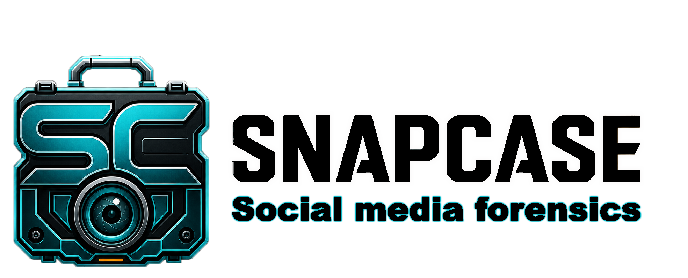

Case modes and licensing gates
Simple capture, standard review, and intelligence indexing modes help match processing depth to the case goal and product tier.
Reporter to Monitor
Public Evidence Intelligence
An investigator-first platform for preserving public online evidence, organizing social captures, and surfacing the case signals that matter.
What SnapCase Is
SnapCase is built for the working moment when an investigator is already reviewing public evidence and needs to preserve it clearly. It keeps source links, local files, hashes, OCR text, comments, media, bookmarks, and reports tied to the case instead of scattered across browser tabs and folders.
Our Products
SnapCase Suite handles case capture, intelligence, and reporting. SnapCase Video Downloader is a standalone companion for preserving online video files and clips.
Investigator-first public evidence intelligence: platform captures, reports, OCR, bookmarks, targets, media matching, and local case organization.
Current pageA standalone video preservation app for downloading public video, clipping ranges, tracking queues, thumbnails, and keeping preservation logs.
Open Video DownloaderNew In SnapCase
The newest SnapCase work sharpens the investigator console: richer platform modules, case targets, local index protection, visual matching, and report-ready review outputs.
Simple capture, standard review, and intelligence indexing modes help match processing depth to the case goal and product tier.
Reporter to MonitorInvestigators can define faces, objects, names, handles, keywords, phones, and other identifiers, then promote targets for cross-case recognition.
Investigator and MonitorMonitor workflows add encrypted local memory for repeated identifiers, visual targets, and historical collision detection while keeping control on the investigator machine.
MonitorOCR case media, bookmark media, captured post images, sampled video frames, comments, and saved text can be searched for names, handles, phrases, and case terms.
Reporter plusBuild browsable detected-face indexes, search a selected face, and compare distinctive objects or details across captured case media.
Investigator plusAccount slots, active-account controls, profile context, and platform report indicators keep multi-account investigations clearer.
Case organizationInvestigator Console
SnapCase keeps capture controls, analytics actions, saved evidence, report buttons, and case database checks close to the investigator's review path.
| Workflow | What It Preserves | Investigator Value |
|---|---|---|
| Profile capture | Public account context, source links, local files | Clean case baseline |
| Bookmarks | Selected posts, media, comments, moments | Focused findings list |
| OCR and search | Image text, saved text, comments, names | Fast triage and hit reports |
| Visual matching | Faces, objects, details, thumbnails | Explainable media leads |
Workflow
SnapCase helps investigators preserve public evidence without losing the trail of why something mattered.
Set investigator details, agency information, case mode, default folders, profile context, and active account state.
Save profile pages, posts, screenshots, comments, visible public media, listings, channel data, and selected bookmarks.
Use OCR, keyword/name search, phone lookup, profile themes, face indexing, object matching, Scout, and Sentry when needed.
Produce platform reports, global bookmark reports, local evidence links, hashes, source URLs, activity logs, and case summaries.
Supported Surfaces
SnapCase focuses on the public-source surfaces investigators actually review: profiles, posts, comments, media, marketplaces, public channels, screenshots, and selected findings.
Preserve public account context, post pages, timelines, captions, screenshots, and source URLs across major platforms.
Capture seller pages, ads, listing metadata, thumbnails, local files, and reports for marketplace-style investigations.
Keep selected findings, comment context, global bookmarks, and platform reports close to the evidence package.
Video downloading can remain a separate companion workflow while SnapCase Suite stays focused on case evidence, analytics, and reporting.
Product Ladder
SnapCase keeps high-value intelligence features in the tiers designed for that work instead of flattening everything into basic capture.
For investigators who need structured capture, reports, hashes, OCR, and local case management.
For deeper case review with visual matching, target lists, and richer media intelligence.
For recurring investigations where repeated people, media, identifiers, and targets matter across cases.
Why It Matters
SnapCase keeps the evidence package understandable: thumbnails, source links, local links, capture logs, OCR text, comments, media matches, target hits, and case context stay close to the investigator's decisions.